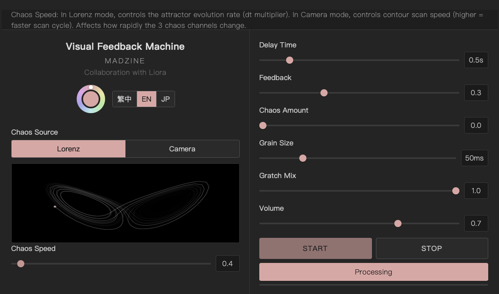

功能介紹
Visual Feedback Machine 是瀏覽器端的即時音訊處理工具，與 Liora 協作開發。
訊號鏈：麥克風 → 延遲迴路（含回饋）→ 顆粒引擎（混沌調變）→ 帶通濾波器 → 輸出。兩種混沌來源可切換：Lorenz 奇異吸引子（x/y/z 三軸）或網路攝影機即時輪廓偵測（X 軸距離、Y 軸距離、轉角角度）。
三個混沌通道獨立控制不同音訊參數：A → BPF 頻率 + 碎片位置、B → 延遲時間搖擺、C → 碎片大小 + 觸發密度。Chaos Amount 推桿統一控制三通道的調變深度。
無需安裝任何軟體，用瀏覽器開啟即可使用。需要麥克風權限，Camera 模式需要相機權限。

特色一覽
- 雙 Chaos 來源：Lorenz 吸引子 + 相機輪廓偵測
- 三通道獨立混沌調變（BPF / 延遲時間 / 碎片參數）
- 顆粒引擎：16 grain，隨機方向與 pitch shift（0.25x~4x）
- 即時 Sobel 邊緣偵測 + Moore neighbor 輪廓追蹤
- Lorenz 相空間蝴蝶圖 / 輪廓掃描動態預覽
- 三語介面（繁中 / EN / JP）
技術資訊
- 平台
- Web (Chrome)
- 開發語言
- HTML / CSS / JavaScript
- Audio
- Web Audio API (ScriptProcessorNode)
- Video
- Canvas 2D (Sobel + contour tracing)
- Collaboration
- Liora